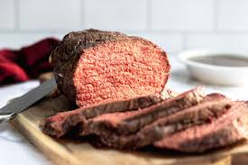

Beef Recipe

When your neighbor gives you a hunk of raw beef, do something besides throw it out! Now you can follow this recipe to turn it into something useful!
Ingredients
- 1-5 lbs of beef
- Salt
- Pepper
Directions
- Preheat the oven to 450 degrees.
- Pat down your beef until dry.
- Cover the beef liberally with salt and pepper.
- Cook beef for 15 minutes at 450, then turn down to 250 degrees.
- Check temperature of beef every 20 min or so until it gets to 120 degrees.
- Let rest for 20 minutes.
- Slice.
- Enjoy!